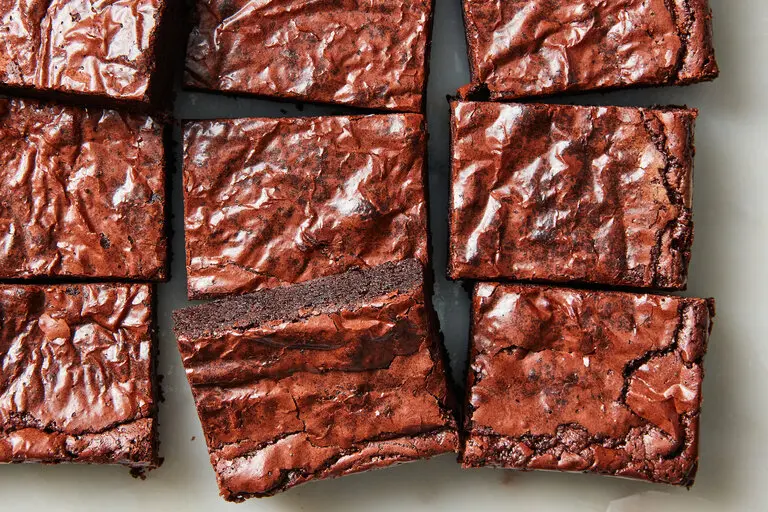

Brownies

Chocolatey, Chewy, Fudgy texture
Easy to prepare, comes together quickly
Ingredients
- ½ cup unsalted butter (1 stick)
- 1 cup granulated sugar
- ½ cup dark or semisweet chocolate chips
- 2 large eggs
- 1 teaspoon vanilla extract
- ½ cup unsweetened cocoa powder
- ½ cup all-purpose flour
- ½ teaspoon kosher salt
- ⅛ teaspoon baking soda
Directions
- Heat the oven to 325 degrees, with a rack positioned in the center. Grease an 8-inch-square baking pan with cooking spray and line the bottom with parchment paper.
- Combine the butter and sugar in a small saucepan. Cook over medium heat, stirring occasionally, until the butter comes to a simmer. Turn off the heat, then add the chocolate chips and stir until melted. (The mixture will be grainy at this point.) Pour into a large mixing bowl and set aside until just warm to the touch.
- Add the eggs and vanilla to the mixing bowl and whisk vigorously for 1 minute, until pale and glossy. Add the cocoa powder and whisk until incorporated. Add the flour, salt and baking soda and mix with a wooden spoon or spatula until well combined. Transfer the batter to the prepared pan and smooth the top.
- Bake brownies until a toothpick comes out with just a few crumbs on it, 30 to 33 minutes. Cool completely in the pan before slicing into squares. Brownies will keep for up to 3 days, well-wrapped at room temperature.